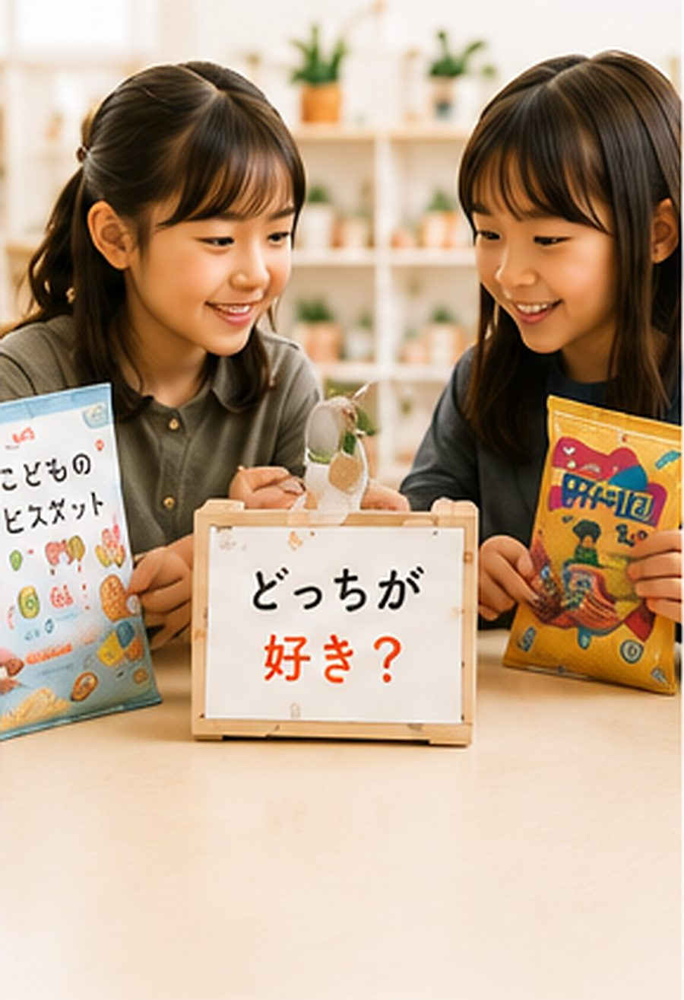
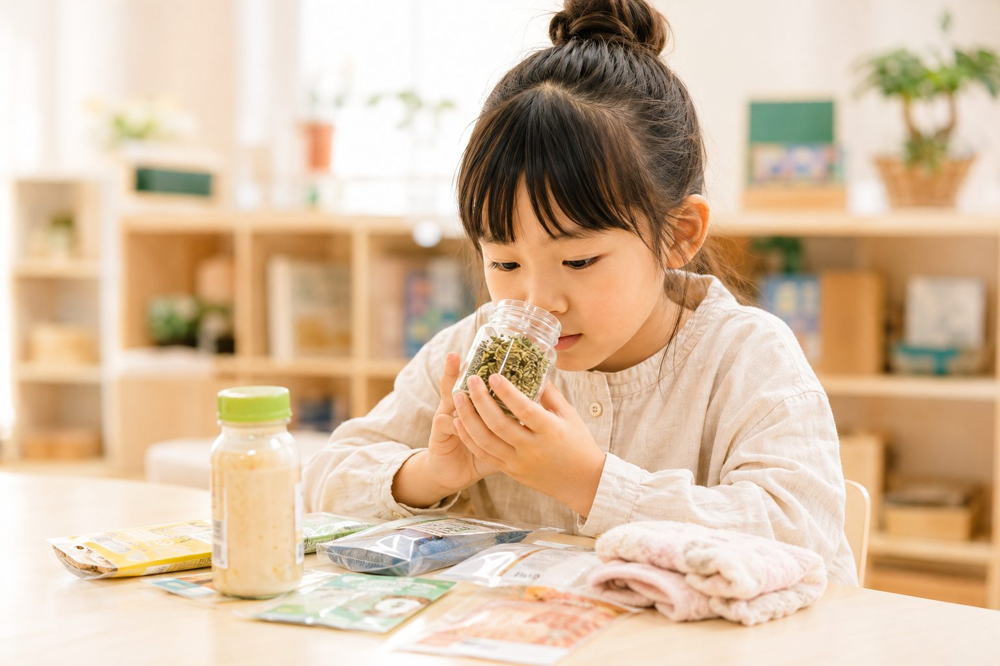
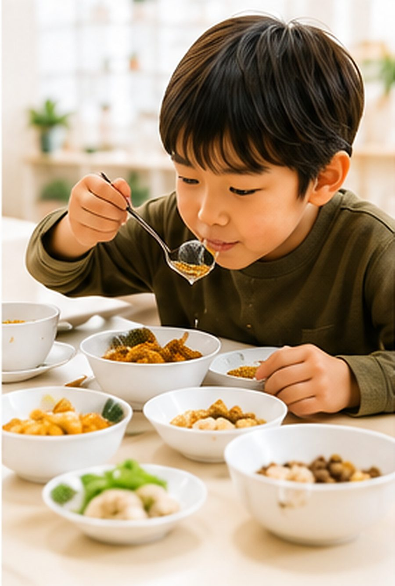
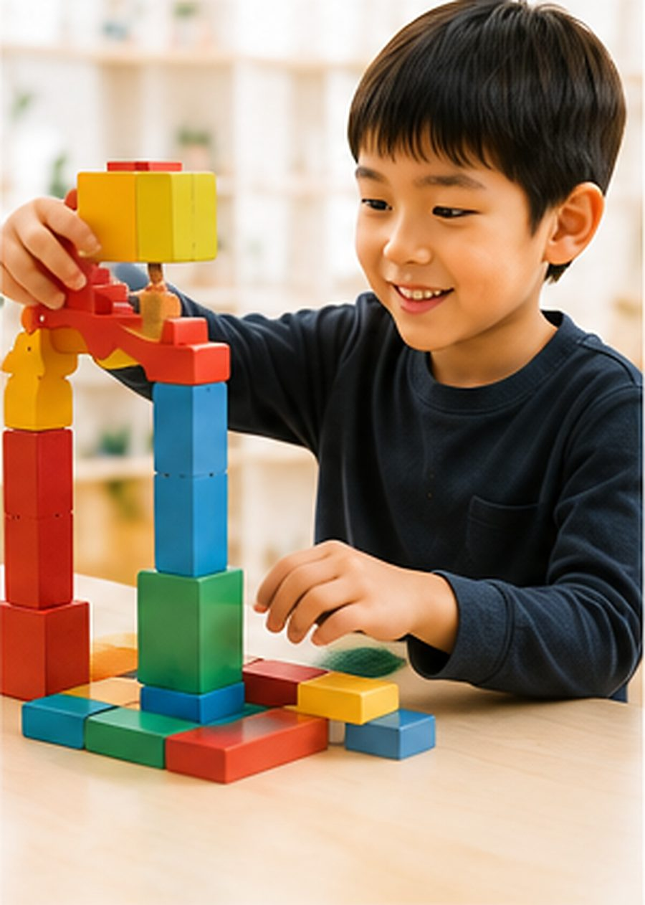
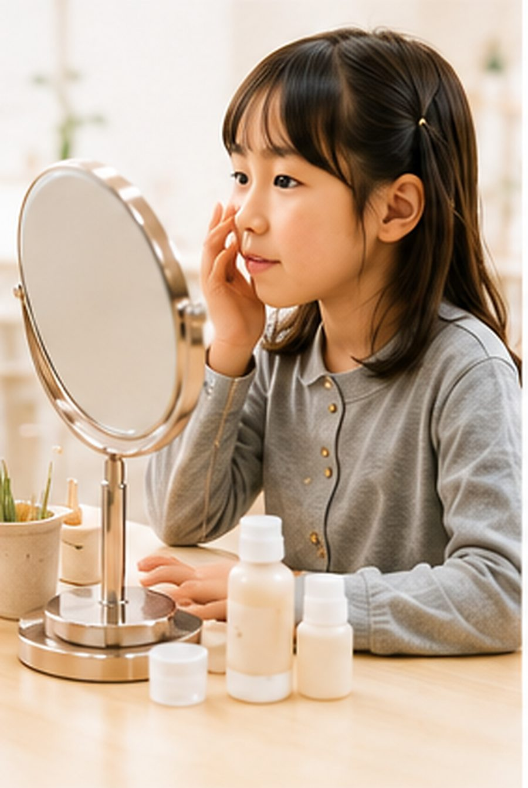
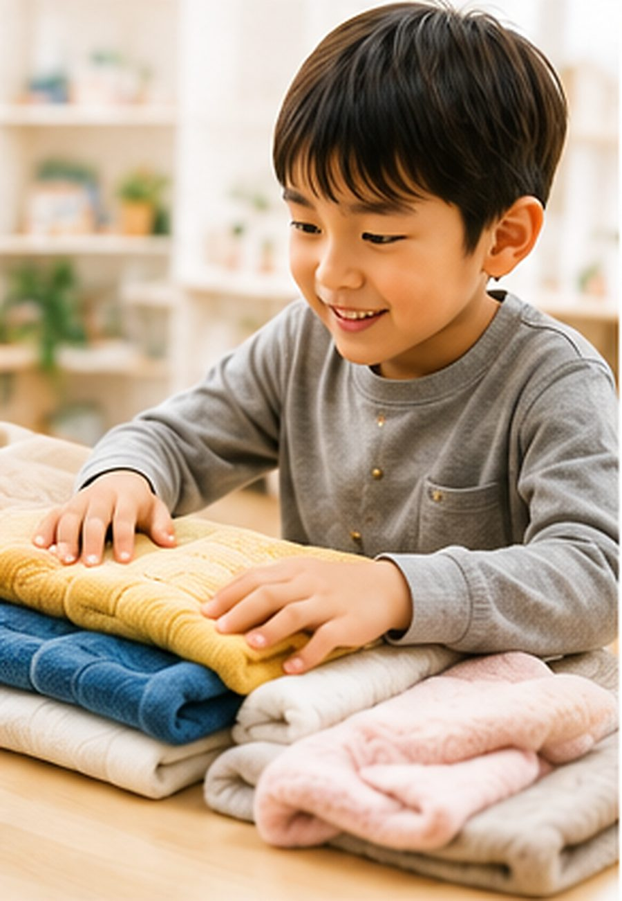
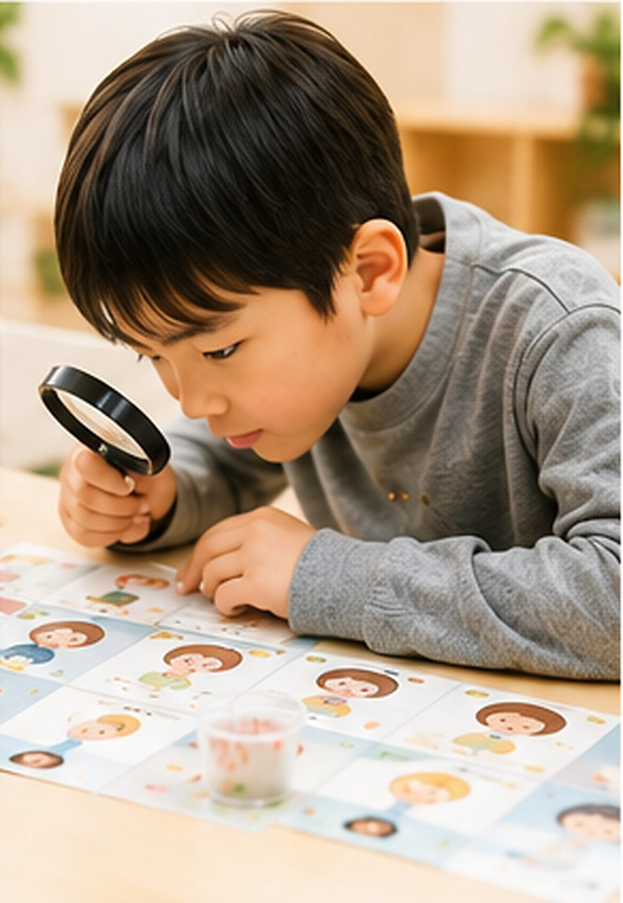
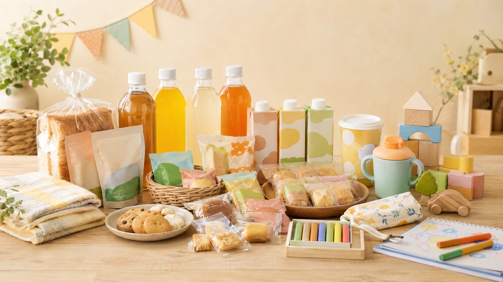
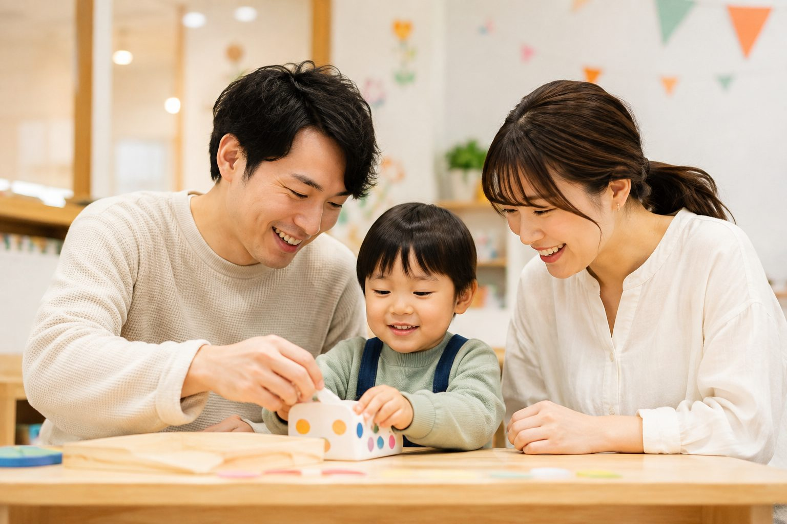
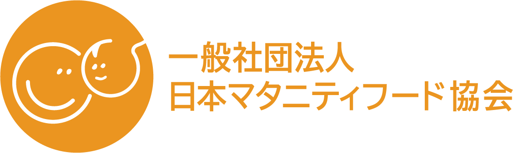

おかし総選挙

食べくらべて、自分の「好き！」に投票しよう！
未来の“おいしい！たのしい！”を
いっしょに見つけよう！
親子で楽しめる
体験型イベント
食やくらしの「なぜ？」を研究しよう！
見る・聞く・さわる・におう・あじわう。
本物の商品をくらべて、感じて、考える。
親子で楽しむ3日間だけの特別な研究体験です。

ABOUT
食やくらしには、ふしぎや発見がいっぱい！「こどもけんきゅうじょ」は、見て・聞いて・さわって・つくって・考える、体験を通して学べる研究所です。
大人が正解を教えるのではなく、子どもの「なぜ？」が主役。
親子でいっしょに、未来のヒントを見つけに行こう！
見て・聞いて・さわって・つくって・考える！6つの研究にチャレンジ！

食べくらべて、自分の「好き！」に投票しよう！

見た目や香り、味をくらべて、ごはんのヒミツをさぐろう！

遊んで、ためして、もっと楽しくなる方法を考えよう！

使いごこちや香りを体験して、キレイのひみつを研究しよう！

いろんな素材をさわって、「心地いい！」を見つけよう！

だれが使うものかな？考えて、たんていしよう！
※研究内容は変更になる場合があります。
REAL PRODUCTS
みんながいつも使っている商品や、食べているものには、たくさんの工夫やこだわり、想いがこめられています。
教材ではなく「本物」にふれるからこそ、気づけること、学べること、未来につながることがあります。

for FAMILY
親子で会話を楽しみながら、「なぜ？」「どうして？」をみつけていく研究体験。普段とは少し違う環境だからこそ見えてくる、お子さまの新しい一面も。
「やってみたい！」を応援するきっかけに。

研究員としてミッションにちょうせん！
6つの研究ブースで見て・聞いて・体験！
気づいたことを研究シートに記録！
感じたことや発見を自由に伝えよう！
きみの発見が未来の商品づくりのヒントに。
GOOD LIFEフェア2026への入場には「入場登録（無料）」が必要です。来場前に登録を済ませて、当日はスムーズに入場しよう！
公式サイトで確認する →ABOUT US

「こどもけんきゅうじょ」を運営する一般社団法人 日本マタニティフード協会は、妊娠・出産・育児期の家族が、安心して選べる食品・サービスとの出会いを支える協会です。
企業とファミリーの間に立ち、認定・売り場・コミュニティ・体験機会を通じて、継続的な接点づくりを行っています。